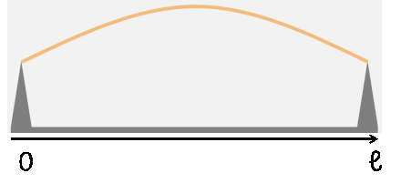
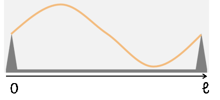
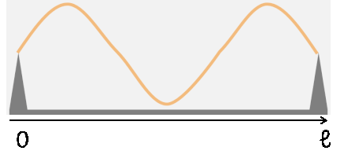
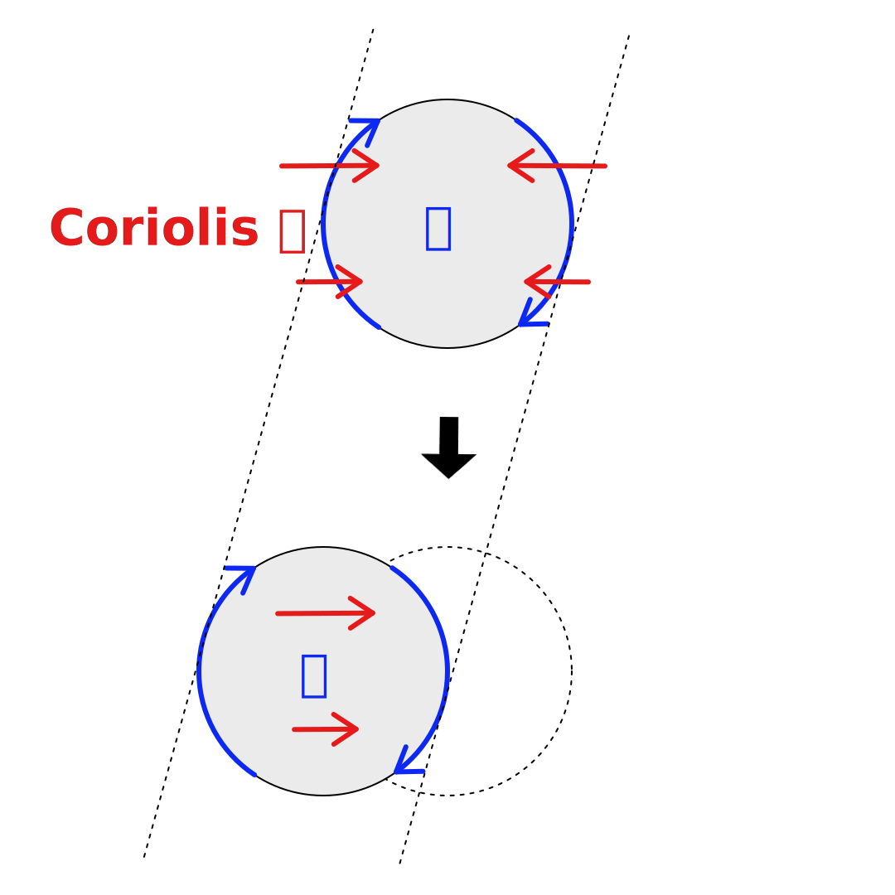
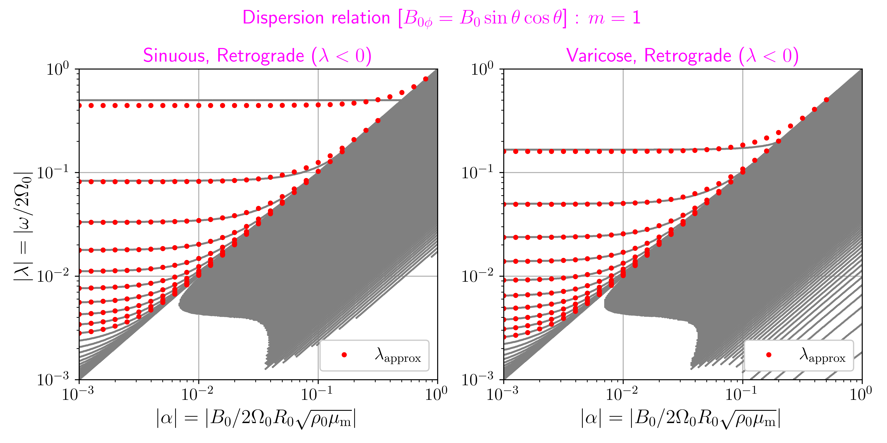

外核最上部の磁気流体波動
深部・ダイナ合同セミナー []
外核最上部の磁気流体波動
-
要旨
- 4 年生向けイントロ
- これまでの研究のレビュー
- 今の研究・今後やりたい研究を少々
中島 涼輔 (九州大学 大学院理学研究院)
本研究は JSPS 科研費 (JP24K07177,
JP24K00694) と
核融合科学研究所 一般共同研究 (NIFS24KIIC001)
の助成を受けたものです。
- [O] Overview / [F] Fullscreen / [G+number] Jump to Slide


磁気流体力学 (MHD) のおさらい
完全導体 (電気伝導度 $\sigma\to\infty$) の場合: すぐさま電場が $\bm{0}$ に
見かけの電場を感じる
$\sigma\to\infty$ のとき $\bm{E}=-\bm{u}\times\bm{B}$
(実効的な電場 $=0$)
磁場が時間変化 $\rot\bm{E}=-(\uppartial\bm{B}/\uppartial t)$
磁力線は流体にはりつく
電流ができる→ Lorentz 力
$\rot\bm{B}=\mu\bm{J}$, $\bm{F}=\bm{J}\times\bm{B}$
波が存在 (Alfvén 波)
磁場は惑星内部を解き明かす数少ない証拠の一つ
鉛直磁場の非軸対称成分 $[\mathrm{nT}]$ @CMB
Finlay & Jackson (2003)
→ 磁力線が凍結した流れ (?)
本研究では外核の中の波に注目
波を調べると何がうれしいか ?
- 外核に関する未知な物理量がわかるかも (あと, 楽しい)
Chi-Durán & Buffett (2023)
-
波の性質は物理量に依存
-
Alfvén 波の伝播速度
$\bm{B}/\sqrt{\rho\mu}$
[$\bm{B}$: 磁場, $\rho$: 密度, $\mu$: 透磁率]
-
Alfvén 波の伝播速度
$\bm{B}/\sqrt{\rho\mu}$
-
観測データと比較
→ 物理量の推定が可能かも -
周期的な変動なので
観測データから抽出しやすい- e.g. 動的モード分解 (DMD)
地球外核の未解決の 1 つ → 最上部安定成層
Kaneshima (2018)
- 層の厚さ $\sim\mathrm{O}(10^2\,\mathrm{km})$ (?)
-
成層の成因は未解明
-
熱的成層 (?)
- 高い熱伝導度 -
組成的成層 (?)
- バロ拡散, CMBでの化学反応, 巨大衝突の残骸
-
熱的成層 (?)
- 成層があるかどうかも確証なし
-
地球の熱化学進化やダイナモに重要
→ この安定成層について調べたい
何をしたいのかのまとめ
- 地球の外核最上部の安定成層を調べたい
-
波を調べると外核に関する未知の物理量がわかるかも
-
特に, 観測される地磁気変動は
外核表面 (≒安定成層) の様子を反映 - 波を調べると, 安定成層に関する物理量を推定可能かも
-
特に, 観測される地磁気変動は
【本研究の動機】 この推定に向けて
安定成層を伝播する波を系統的に理解しておきたい
回転系の流体力学のおさらい
-
Taylor–Proudman の定理
-
非圧縮 $\div\bm{u}=0$
+ 地衡流 $2\bm{\varOmega}\times\bm{u}=-\grad p$
→ $(\bm{\varOmega}\ip\bm{\nabla})\bm{u}=0$ - 回転軸方向に流れ一様
-
非圧縮 $\div\bm{u}=0$
-
地衡流 + 浮力 (静水圧)
→ 温度風
e.g. 南北温度勾配 → 東西流の鉛直勾配 -
地衡流 + Lorentz 力
→ 磁気地衡流 (磁衡流)
地球以外の安定成層も重要 (木星)
- 圧力電離 → 金属 $\ce{H}$
-
$\ce{H}$, $\ce{He}$ の不混和
- $\ce{He}$ の雨 → 上側安定成層
- 希薄コア (下側安定成層)
地球以外の安定成層も重要 (木星)
Wulff+ (2024)
-
重力の観測
→ 帯状流はどの深さまで
続いているか ?
NASA/JPL/University of Arizona,
Public domain, via Wikimedia Commons -
安定成層 + MHD の効果が
帯状流の下方への貫入を妨げる-
磁気地衡流
→ 子午面流が発生 -
子午面流による温度偏差
→ 温度風平衡
→ $(\bm{\varOmega}\ip\bm{\nabla})u_\phi\neq0$ [$\phi$: 経度]
-
磁気地衡流
{kind=link}
磁気流体力学 (MHD) のおさらい
- 今度は有限の電気伝導度を考える ($\sigma<\infty$)
-
Ohm の法則:
$\bm{J}=\sigma(\bm{E}+\bm{u}\times\bm{B})$
pre-Maxwell 方程式: $\div\bm{B}=0$, $\rot\bm{E}=-(\uppartial\bm{B}/\uppartial t)$, $\rot\bm{B}=\mu\bm{J}$ -
誘導方程式 (磁気拡散率 $\eta=1/\mu\sigma$)
\[\frac{\uppartial\bm{B}}{\uppartial t}\,=\,\underbrace{\rot(\bm{u}\times\bm{B})}_{流れが磁場を変化}\,+\,\underbrace{\eta\nabla^2\bm{B}}_{磁場が拡散}\]
-
表皮深さ $=\sqrt{2\eta/\omega}$:
磁場の変動が減衰せずに通過できる距離
→ 速い時間変化は (空間的に) すぐ減衰 [$\omega$: 角周波数]
cf. エレベーターの中でネット繋がらない
-
円筒座標 $(s,\phi,z)$ を考える. $\bm{u}=\bm{0}$
とする.
初期条件: $s=0$ 付近に局在した $z$ 向きの電流- $t=0$ で $\bm{E}=\eta\,\mathrm{e}^{-s^2/2}\hat{\bm{e}}_z$ , $\bm{J}=\sigma\eta\,\mathrm{e}^{-s^2/2}\hat{\bm{e}}_z$ , $\rot\bm{B}=\mathrm{e}^{-s^2/2}\hat{\bm{e}}_z$
-
境界条件 $s\to\infty$ で $B_\phi\propto
1/s$ のとき
$\bm{B}=[(1-\mathrm{e}^{-s^2/2})/s]\hat{\bm{e}}_\phi$ - 最初の時間変化は, $(\uppartial\bm{B}/\uppartial t)=-\eta \,s\mathrm{e}^{-s^2/2}\hat{\bm{e}}_\phi$
地球以外の安定成層も重要 (土星)
- 木星と同じく上側安定成層
-
自転軸対称な磁場
- ↔ 反ダイナモ定理
-
安定成層内では
帯状流がメイン -
$B_r$ と $B_\theta$
の軸対称成分は
帯状流で時間変化せず
表皮効果が効かない
[$r$: 動径方向, $\theta$: 余緯度]
[下]帯状流と磁場
Yadav+ (2022)
地球以外の安定成層も重要 (水星)
Takahashi+ (2019)
-
水星の外核上部は
熱的に安定成層しているかも - 北に少しずれた双極子磁場
地球のマントルも速い変動を隠す
- 地球のマントルの電気伝導度 $\sigma\sim 1\,\mathrm{S/m}$
-
表皮深さがマントルの厚さと同程度のとき
→ $\sqrt{2\eta/\omega}\approx3\times10^3\,\mathrm{km}$
→ $2\pi/\omega\approx 1\,\mathrm{yr}$ -
1 年周期よりも速い外核内部の磁場変動は
地上では観測できない -
外核の波を調べる場合は
年スケールのゆっくりとした波に注目
外核の波における磁気拡散の重要性
-
[再掲] 誘導方程式 (磁気拡散率 $\eta=1/\mu\sigma$)
\[\frac{\uppartial\bm{B}}{\uppartial t}\,=\,\underbrace{\rot(\bm{u}\times\bm{B})}_{流れが磁場を変化}\,+\,\underbrace{\eta\nabla^2\bm{B}}_{磁場が拡散}\]
- 磁気拡散時間 $=d^2/\eta$: 距離 $d$ を磁場が拡散する時間
- 地球の外核の磁気拡散率 $\eta\sim 1\,\mathrm{m^2/s}$
-
$d\sim$ 安定成層の厚さ
$\sim\mathrm{O}(10^2\,\mathrm{km}$) とすると
磁気拡散時間 $\sim 300\,\mathrm{yr}$ -
本発表では, 数年周期程度の波に注目することにして
以下では, 磁気拡散の効果を無視
これまでの研究 (一部) の
レビュー
「波 (線形波動) を調べる」とは何か ?
-
基準状態からの小さなずれが
波として伝播 -
本発表では, 基準状態は
- 速度: 剛体回転
- 磁場: 東西向きの磁場
-
支配方程式に含まれる
ずれの 2 乗は無視 (線形化) -
周波数, 波数, 物理量の関係
(分散関係) を求める
安定成層の中では
東西向きの磁場が卓越 ?
[$\omega$: 角周波数, $k$: 波数]
「波 (線形波動) を調べる」とは何か ?
{kind=link}
-
境界に囲まれた有限領域内の波の場合...
- あらゆる波 $=\sum$ 固有モード (可算無限個)
- 周波数と波長は離散的
Hiroki Yano, CC BY-SA 3.0, via Wikimedia Commons -
外核も有限の領域
- 固有モードを調べれば OK
-
無限に広がった領域の場合...
-
波長は自由
→ 周波数と波長は連続的 (不可算無限個)
-
波長は自由
{kind=link}
[水平 2 次元, Malkus 磁場] の場合の固有モード
外核最上部の安定成層を伝播する波を考えたい
→
簡単化:
回転する球体に張りついた薄い流体層
(鉛直運動なし)
(球面上での一様磁場)
縦軸: 周波数, 横軸: 磁場$/$回転 (地球外核: $\sim 10^{-4}$)
Nakashima & Yoshida, arXiv に加筆
磁気 Rossby 波とは ?
-
Coriolis 力の効き方が場所によって違う場合

- $(\uppartial u_\phi/\uppartial t)+2\varOmega \cos\theta\,u_\theta=\cdots$ [$\theta$: 余緯度, $\phi$: 経度]
-
南北で $\cos\theta$ だけ Coriolis
力の大きさが違うので
南北流 $u_\theta$ は渦をつくる - 渦の左右に南北流ができる → Rossby 波
-
MHD の場合は Lorentz 力が加わる
-
Lorentz 力が Rossby 波伝播を手助け
→ 速い磁気 Rossby 波 -
Lorentz 力 が Coriolis
力による渦生成とバランス
→ 遅い磁気 Rossby 波
-
Lorentz 力が Rossby 波伝播を手助け
[浅水系, Malkus 磁場] の場合の固有モード
水平 2 次元を拡張: 弱い鉛直流を考慮
縦軸: 周波数, 横軸: 成層に関するパラメータ
色: 運動エネルギー比 中島 D 論 (2020) に加筆
- 磁気-慣性重力波
- 磁気-混合 Rossby 重力波
- 磁気-Kelvin 波
- 速い磁気 Rossby 波
- 速い磁気 Rossby 波 (極トラップ)
- 遅い磁気 Rossby 波
- 遅い磁気 Rossby 波 (西進)
- 速い磁気 Rossby 波 (極トラップ) と遅い磁気 Rossby 波 (西進) の共鳴不安定
誰が波を起こすか ?
外核の中の激しい対流が安定成層を揺らす
-
Lighthill 方程式の MHD 波アナログ
\[\text{線形波動の式}\,=\,\text{非線形項}\]
- 非線形項を強制項とみなす
-
線形項は, 基準状態+波成分
非線形項は, 対流成分で計算
Buffett & Knezek (2018)
波の理論解と地磁気変動との比較に向けて
-
年スケールの波が地磁気変動と関係あり
-
遅い磁気 Rossby 波は, 地球的なパラメータで
年スケールの周期になるので, 地磁気変動の理解にとって重要 (?)
-
遅い磁気 Rossby 波は, 地球的なパラメータで
-
不満
-
これまで基準状態として考えていた Malkus
磁場は
シンプルすぎて外核最上部の様子を表しているとは言い難い
-
これまで基準状態として考えていた Malkus
磁場は
[水平 2 次元, 非 Malkus 磁場] の場合の固有モード
赤道反対称な磁場の中で
一番シンプルなもの
[上/下] ($u_\theta$ が) 赤道対称/反対称モード
縦軸: 周波数,
横軸: 磁場$/$回転 (地球外核: $\sim 10^{-4}$)
Nakashima & Yoshida, arXiv に加筆
[水平 2 次元, 非 Malkus 磁場] の場合の固有モード
- これまでの分散関係と様子が違う
-
遅い磁気 Rossby 波 (地磁気変動に重要) と Alfvén 波の
離散固有モードが行方不明 -
代わりに連続スペクトルが出現
- 外核は有限領域だから固有モードは離散的になるのでは ?
波線理論 (WKBJ 近似) による解釈
- 連続スペクトルの正体は ?
-
波線理論を使う
-
波長が基準状態の空間勾配より
十分小さい -
波束の伝播に伴う
波長や周波数の変化を追跡 -
遅い磁気 Rossby 波と
Alfvén 波的な波束は
臨界緯度に吸収される
-
波長が基準状態の空間勾配より
-
臨界緯度の位置は周波数に依存
→ 可能な周波数と波長が連続的
Nakashima & Yoshida, arXiv に加筆
波線理論 (WKBJ 近似) による解釈
-
一方, 離散固有モードになれる
速い磁気 Rossby 波は
吸収されず反射を繰り返す -
量子化条件: $\int
\text{(南北波数)}\upd\theta=(n+1/2)\pi$
→ 数値的に求めた分散関係をよく近似
 灰: 数値計算, 赤: 量子化条件
Nakashima & Yoshida, arXiv
今の研究・今後やりたい研究
過去スライド2022後期
過去スライド2023前期
過去スライド2023後期
「波が吸収される」のは, どう理解すればよいか ?
-
波線理論から擬運動量の保存則が導出可
- 平均変分原理: 線形波動の場を連続媒質の解析力学として扱う
- 波の位相に関する Euler-Lagrange 方程式に対応
-
擬運動量は, 波と平均場 (基準状態)
の間の相互作用に重要
- 波の吸収 → 波から平均場へ運動量などが移動
- 外核の対流 → 波の励起・伝播 → 外核最上部の平均場の時間発展
- こういう現象も地磁気観測との比較のターゲットになるかも
「遅い磁気 Rossby 波の固有モード」のなりそこないを探す
-
本発表と似た状況は, 他の分野では色々研究されている
-
無衝突プラズマ・重力多体系の Landau 減衰
- 非粘性渦の quasi-mode
- 量子多体系の共鳴状態
-
無衝突プラズマ・重力多体系の Landau 減衰
-
実世界の問題を複素数世界に拡張して得られる波の解が
なぜか実験やシミュレーションで観察されるらしい-
基準状態の形状で決まる減衰率をもつ
固有モードになりそこないの波 (?)
-
基準状態の形状で決まる減衰率をもつ
-
地磁気変動でも
遅い磁気 Rossby 波のなりそこないが観測されないか ?
まとめ
- 地球外核の安定成層を調べるために波を研究している
-
基準状態が Malkus 磁場の場合については
既にかなり整理されている (先行研究もあり) -
基準状態が非 Malkus 磁場の場合については
あまり理解が進んでいなかったので
Nakashima & Yoshida, arXiv などで
詳細な研究が行われ始めた段階である -
連続スペクトルとの関連で
波-平均場相互作用や quasi-mode の研究を現在進めている